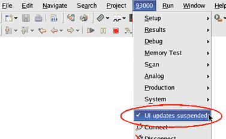

Suspending and resuming UI updates
When you execute a test while SmarTest is running in the engineering mode, the SmarTest user interfaces will be suspended automatically and the suspended user interfaces turns gray, as shown in the picture below. This decreases the test execution time, because no system performance is required to update the graphical user interfaces periodically.
When the test is finished, the user interfaces will be resumed.
If you want to force the SmarTest software to update the user interfaces during text execution for debugging purposes, select in the 93000 menu . The 93000 menu appears in all predefined perspectives. This will decrease the system performance.
To switch back to the automatic suspend/resume function, select again.

Functional changes
- Introduced before SmarTest 6.3.2